← Laufstrecken
Feldis-Staetzernhorn-Lenzerheide
Wegname:
Feldis-Staetzernhorn-Lenzerheide
Streckenart:
Laufstrecke
Kategorie:
Berglauf
Region:
GR Mitte
Streckenlänge:
19 Km
Hm +:
1400 hm
Hm -:
1400 hm
Datum:
10.09.23
Kurzbeschrieb:
Feldis - Windegga - Fulhorn - Stätzerhorn - Heidsee
Link SchweizMobil:
Bild SchweizMobil:
Bericht:
Wir treffen uns auf dem Gleis 10 im Churer Bahnhof. Das Gleis 10 ist uns bestens bekannt, da von hier aus viele von unseren Touren beginnen. Der Zug fährt ab diesem Gleis in Richtung Thusis/Engadin oder Ilanz/Oberalp. Unsere Zugfahrt geht nach Rhäzüns und anschliessend mit der Luftseilbahn nach Feldis.
Heute sind die Frauen (5) in der Überzahl, da nützt es nichts, dass Marco, Albert und Jörg von unserem Leithund Finn unterstützt werden. Denn wir haben mit Enya und Ziva noch zwei muntere Hundedamen dabei.
Unsere Tour beginnt im sonnigen Feldis, von hier aus laufen wir zur Alp di Plaun, hier lockt jetzt schon der feine Kuchen der bei der Alpbeiz angeboten wird, aber wir haben erst wenige Kilometer hinter uns und noch einige vor uns. Vor allem wird es ab jetzt steil, wir folgen dem Wanderweg Richtung Fulhorn. Mit dem Fulhorn (2529 hm) haben wir das erste Horn erreicht. Nach einem kurzen Abstieg, folgen wir dem super schönen Gratweg zum Stätzerhorn (2574 hm). Die Aussicht und das Wetter kann man fast nicht toppen. Von hier oben sehen wir auch unser Endziel den Heidsee. Doch dazwischen liegen noch einige Höhenmeter (1000 hm) die es nach unten zu laufen gibt. Wir nehmen den Weg über die Alp Lavoz nach Lenzerheide zum Heidsee, wo Marco, Jörg, Katharina und Barbara ihre Badehosen auspacken und sich bei sommerlichen Temperaturen im See abkühlen. Albert unser Glacé-Liebhaber, steuert sofort zum Glacé Stand. Auch wir geniessen noch einige feine Sachen vom Lido-Restaurant, bevor wir mit dem Postauto nachhause fahren.
Autor:
Petra & Marco
Teilnehmer:
Silvia mit Enya, Katarina, Jörg, Jolanda, Albert, Barbara, Petra, Marco mit Finn
Besonderes:
Galerie:
-
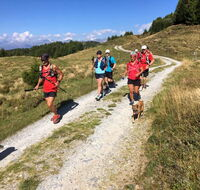
-
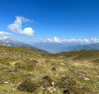
-
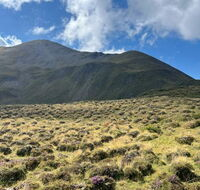
-
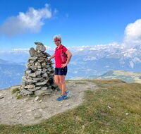
-
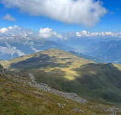
-
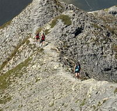
-
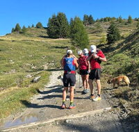
-
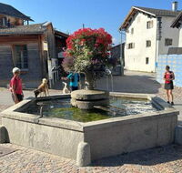
-
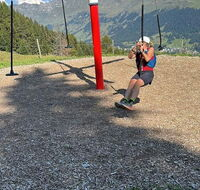
-
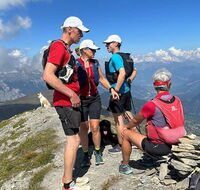
-
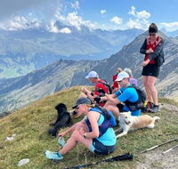
-
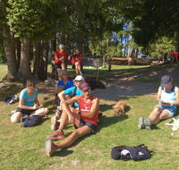
-
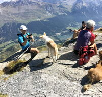
-
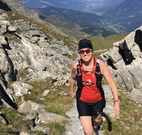
-
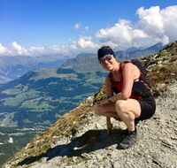
-
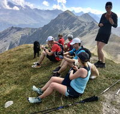
-
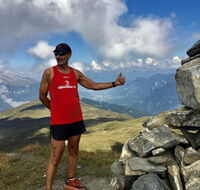
-
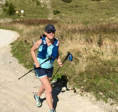
-
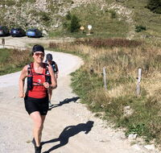
-
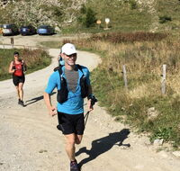
-
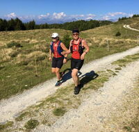
-
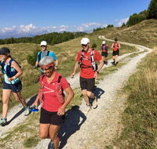
-
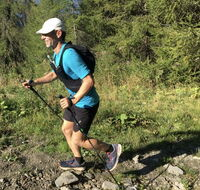
-
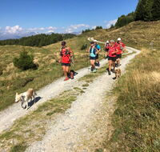